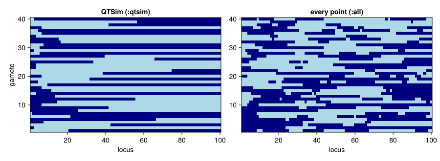
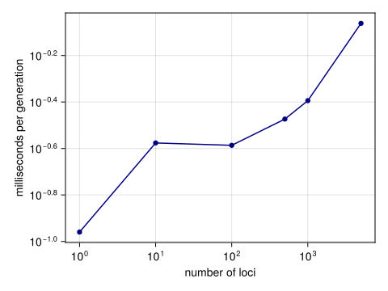

Loci and recombination
Simon Frost
Overview
The paper’s populations carry 100, 500, 1000 or 5000 loci and recombine them with a mean of three or five crossovers per gamete (Pagel et al. 2025). This vignette looks at how gametes are made, at a feature of QTSim’s recombination that the published results depend on, and at what more loci cost.
Each gamete is built from one parent’s two chromosomes. The number of crossover points is drawn from a Poisson distribution with mean RecombPoissonMean (none if the draw is zero or at least the number of loci), the points are placed at distinct random positions, and the gamete starts on a randomly chosen parental chromosome and switches strands at the crossover points. In QTSim the copying loop never advances to the next point, so only the lowest point ever switches: every gamete has at most one crossover, however many points were drawn. The published simulations were run that way. The package reproduces it by default (CrossoverModel = :qtsim) and offers the evidently intended model, in which every point switches, as CrossoverModel = :all.
Setup
using QTLSim
using CairoMakie, Printf, Random, Statistics
CairoMakie.activate!(type = "png")What gametes look like
gamete! builds one gamete from two parental chromosomes. With one parental chromosome all zeros and the other all ones, the gamete shows which parent each locus came from. Here are 40 gametes from 100 loci with a mean of five crossover points, under each model.
L = 100
A = zeros(L); B = ones(L); dest = zeros(L)
rng = Xoshiro(1)
draw(allpoints) = reduce(hcat, [copy(gamete!(dest, A, B, rng, 5.0, L, allpoints)) for _ in 1:40])
qtsim, every = draw(false), draw(true)
switches(G) = [count(i -> G[i, j] != G[i+1, j], 1:L-1) for j in axes(G, 2)]
@printf("mean crossovers per gamete: QTSim model %.2f, every point %.2f\n",
mean(switches(qtsim)), mean(switches(every)))mean crossovers per gamete: QTSim model 1.00, every point 5.30fig = Figure(size = (900, 330))
for (k, (G, name)) in enumerate(((qtsim, "QTSim (:qtsim)"), (every, "every point (:all)")))
ax = Axis(fig[1, k], title = name, xlabel = "locus", ylabel = k == 1 ? "gamete" : "")
heatmap!(ax, 1:L, 1:40, G, colormap = [:lightblue, :navy])
end
fig
Figure 1: Forty gametes (rows) from a parent with one chromosome of zeros (light) and one of ones (dark), 100 loci, a mean of five crossover points. Under QTSim’s model (left) each gamete switches strands at most once; when every point switches (right) gametes are mosaics.
Whatever the crossover pattern, a gamete takes each locus from one parental chromosome, and the starting chromosome is chosen fairly. On average, then, a gamete carries half of the parent’s additive genotype under either model, so neither biases the mean. Lean proves this for any assignment of loci to strands (gamete_expected_sum_by in lean/CategoricalQuantGen/Recombination.lean). With random allelic effects:
a = randn(Xoshiro(2), L); b = randn(Xoshiro(3), L)
for allpoints in (false, true)
s = [sum(gamete!(dest, a, b, rng, 3.0, L, allpoints)) for _ in 1:100_000]
@printf("%-6s mean gamete genotype %.3f ± %.3f (standard error) half the parent's genotype %.3f\n",
allpoints ? ":all" : ":qtsim", mean(s), std(s) / sqrt(length(s)), (sum(a) + sum(b)) / 2)
end:qtsim mean gamete genotype -1.013 ± 0.025 (standard error) half the parent's genotype -1.047
:all mean gamete genotype -1.066 ± 0.024 (standard error) half the parent's genotype -1.047Why it matters for the results
Recombination does not change the mean, but it changes how genetic variance is distributed among gametes, and so how much variance the population holds and how fast it can respond to selection. To see the effect, the same populations are run under both models: 100 loci with five crossover points per gamete, paper-like parameters, 10,000 generations of stabilising selection and then a continuously moving optimum, for 48 seeds each.
paperlike = Params(PopSize = 1000, Ploidy = 2, NoQTL = 100, NoGenerations = 12_000,
PhenotypeVar = 0.022, Heritability = 0.32, MutationScalar = 0.004,
MutationRatePerGamete = 1e-4, RecombPoissonMean = 5.0, InitFitnessSD = 5.0,
MoveFitnessSDGen = 10_000, MoveFitnessSD = 0.05, MoveType = :continuous)
jobs = [(model, seed) for model in (:qtsim, :all) for seed in 1:48]
res = Vector{Any}(undef, length(jobs))
Threads.@threads for k in eachindex(jobs)
model, seed = jobs[k]
o = simulate(Params(paperlike; CrossoverModel = model); seed)
j = findfirst(==(9_999), o.gen)
res[k] = (; model, VG = o.geno_var[j], T = o.extinct ? o.extinct_gen - 9_999 : 2_000)
end
summ(model, f) = [log(f(r)) for r in res if r.model === model]
for (name, f) in (("genetic variance before the move", r -> r.VG),
("generations to extinction", r -> r.T))
q, a = summ(:qtsim, f), summ(:all, f)
δ = mean(a) - mean(q); se = sqrt(var(a) / length(a) + var(q) / length(q))
@printf("%-33s every-point / QTSim model: ×%.2f (95%% interval ×%.2f–×%.2f)\n",
name, exp(δ), exp(δ - 1.96se), exp(δ + 1.96se))
endgenetic variance before the move every-point / QTSim model: ×1.08 (95% interval ×0.99–×1.17)
generations to extinction every-point / QTSim model: ×1.10 (95% interval ×1.08–×1.12)Applying every crossover point lets the populations survive the moving optimum about 10% longer, and they tend to hold more genetic variance (in these runs the interval for the variance only just includes no difference). The comparison of the Julia model with the paper’s published results (Validation against QTSim) shows the same effect across all the paper’s strata, and shows that only QTSim’s model reproduces the published numbers.
What more loci cost
Most of the work in a generation is copying chromosomes into gametes and summing genotypes, so the time per generation grows with the number of loci.
Ls = [1, 10, 100, 500, 1000, 5000]
costs = map(Ls) do L
q = Params(paperlike; NoQTL = L, NoGenerations = 40, MoveFitnessSDGen = -1)
simulate(Params(q; NoGenerations = 2); seed = 1) # compile
1000 * minimum(@elapsed(simulate(q; seed = s)) for s in 1:3) / q.NoGenerations
end
for (L, c) in zip(Ls, costs); @printf("%5d loci: %7.3f ms per generation\n", L, c); end 1 loci: 0.110 ms per generation
10 loci: 0.265 ms per generation
100 loci: 0.259 ms per generation
500 loci: 0.336 ms per generation
1000 loci: 0.404 ms per generation
5000 loci: 0.868 ms per generationfig = Figure(size = (480, 360))
ax = Axis(fig[1, 1], xscale = log10, yscale = log10, xlabel = "number of loci",
ylabel = "milliseconds per generation")
scatterlines!(ax, Ls, costs, color = :navy)
fig
Figure 2: Time per generation against the number of loci for 1000 diploid individuals, on one thread. With a few loci the fixed cost of each individual dominates; from a few hundred loci on, the cost grows steadily with the number of loci.
The kernel copies and sums blocks of about √L loci rather than single loci, so the time grows far more slowly than the number of loci: a 5000-locus population takes under a millisecond per generation, about three times as long as a 100-locus one. One of the paper’s 250,000-generation runs still takes a few minutes, and all 119,984 of them thousands of CPU-hours, so the replication therefore samples the paper’s inputs and stops each run 2000 generations after the optimum starts to move.
Pagel, Mark, Jacob D. Gardner, and Andrew Meade. 2025. “Quantitative-Genetic Analysis of Directional Adaptation Suggests Low Maximum Sustainable Rates of Change in Agreement with Data from Field Populations.” Scientific Reports 15. https://doi.org/10.1038/s41598-025-24445-2.